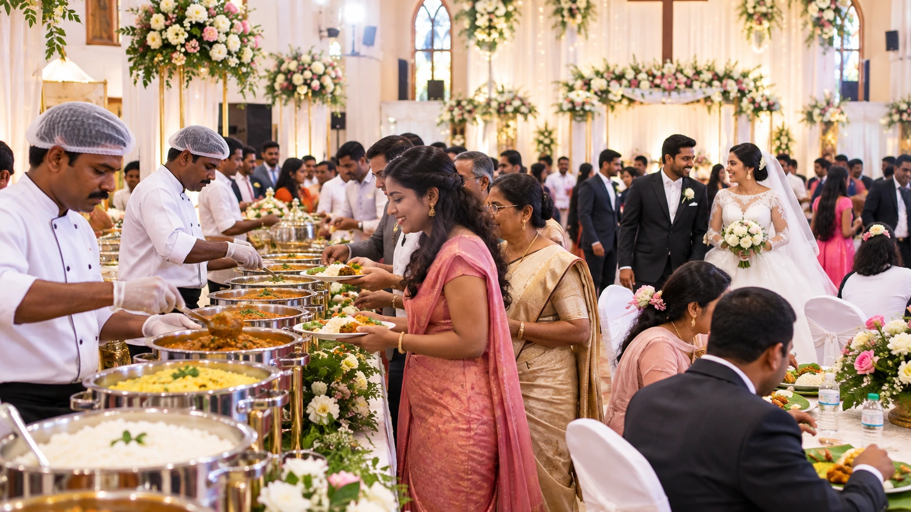
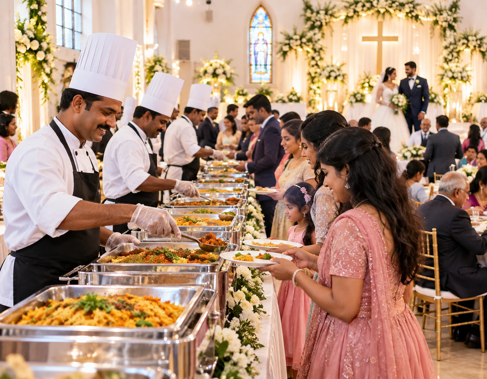
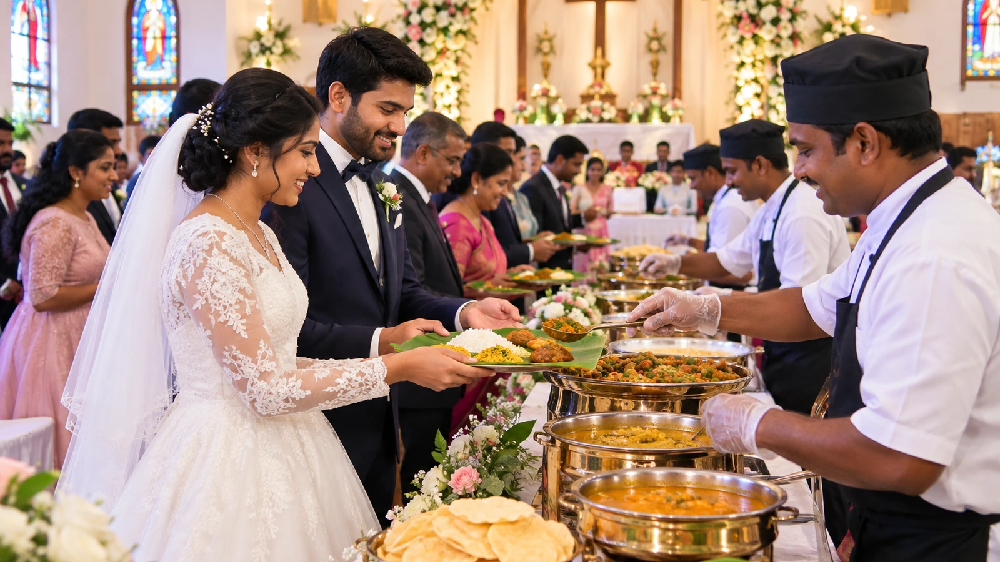
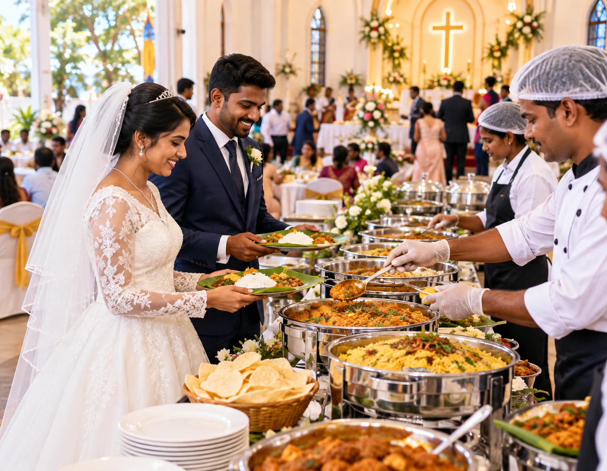
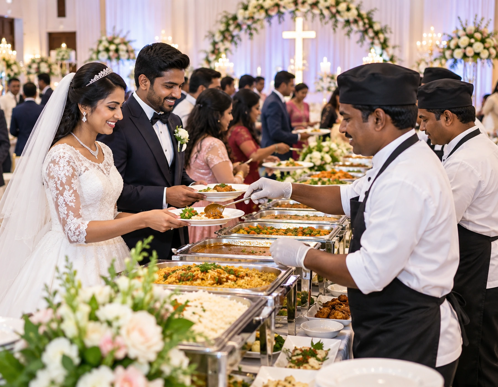
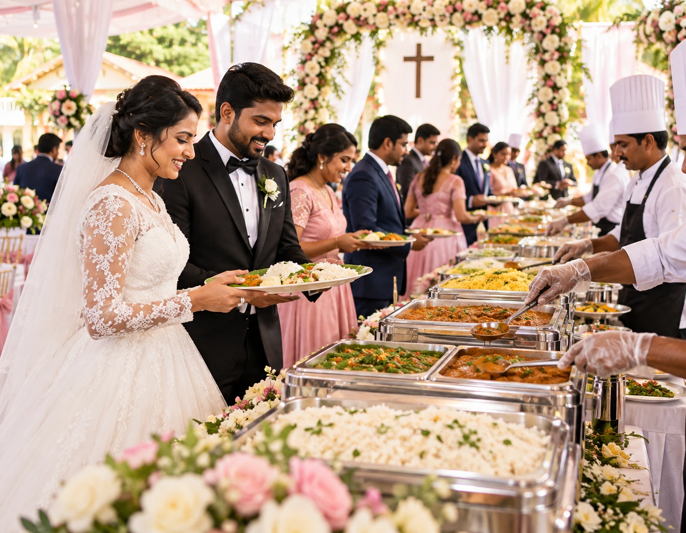

Confirm Family-Table Hospitality with the host
In Christian Wedding Catering, course and cake sequencing is best decided alongside guest count and venue conditions. This detail should appear in the final event brief together with setup lead time.

Wedding & Marriage
From church-service completion to cake cutting and the reception meal, Vellore Catering World coordinates food, staffing and guest movement around the real schedule of a Christian wedding.

Service overview
Christian weddings often move from the church to a reception hall on a tight clock. We plan welcome service, family seating, buffet opening and cake timing around that handover so guests are never left waiting.
Planning Christian Wedding Catering becomes clearer once church-to-reception handover is agreed with the host. The benefit is a more deliberate approach to closing batches, especially when the venue has constraints.
Share the venue, approximate guest count, meal timing and food preferences. The catering scope can then be shaped around the real event rather than a generic package.
Why choose us
Church timings, photographs, bridal-party movement and reception arrivals create a different flow from other wedding formats. Our service brief connects these moments before production quantities and staff positions are locked.
In Christian Wedding Catering, course and cake sequencing is best decided alongside guest count and venue conditions. This detail should appear in the final event brief together with setup lead time.
Courses are selected to suit the expected guest profile rather than forcing a one-size-fits-all package onto your wedding.
Setup, transport and service sequencing are planned around Vellore venues, access windows and your event timetable.
The same enquiry details flow into WhatsApp so date, contact number and catering requirement are easy to continue with the team.
What is included
The scope can include welcome drinks, starters, family-table service, buffet or plated dining, cake support, desserts, beverages, kitchen logistics and reception-hall coordination based on your programme.
Event formats
We adapt staffing and meal service for church-plus-hall weddings, standalone receptions, smaller parish functions and larger evening celebrations rather than forcing every event into the same package.
Wedding ceremonies, receptions and marriage functions
A sensible brief for Christian Wedding Catering records reception arrival flow before quantities and staffing are finalised. The host can then review meal progression against budget, timing and guest expectations.
Expanded staffing, replenishment and guest movement planning for a busier wedding.
Service adjusted to kitchen access, dining layout and timing restrictions at the selected venue.
Cuisine choices
Families can keep the meal traditionally South Indian, add biryani and grills, or combine selected Indian and continental-style dishes. We avoid overloading the spread with combinations that slow service.
Customisation
Menu changes are checked against kitchen capacity, buffet space, guest count, dietary requirements and the time available between church completion, photographs and dinner service.
A useful way to plan Christian Wedding Catering is to begin with elder and family seating. When this is settled early, arrival pattern is easier to coordinate and explain to everyone involved.
Identify Jain, vegan, gluten-aware, allergy-related or other dietary needs early so the feasible menu can be discussed.
Add or reduce sweets, starters, rice choices, breads and counters based on time, budget and guest expectations.
Sequence food around the key moments of the wedding, not merely a generic lunch or dinner clock.
Live counters
Pasta, grill, chaat, dosa or beverage counters can add interest, but they must not create queues near the entrance, stage or cake table. Counter count is planned against actual peak arrival volume.
Service styles
Some receptions work best as a buffet, while close family and elderly guests may benefit from assisted table service. We can combine formats so convenience and presentation both work.
Guest capacity
Christian receptions can see large arrival waves immediately after the church service. Staffing, holding quantities and buffet lanes are sized for the busiest service window rather than the total count alone.
Focused service plans for smaller guest lists where freshness and timing matter more than a large buffet footprint.
Balanced batch cooking and replenishment for typical family, community and business functions.
Additional counters, service lanes, holding equipment and staffing can be planned after venue and guest-count review.
Event process
We map the sequence from church departure and venue arrival through welcome service, couple entry, photographs, cake cutting, buffet opening, dessert and final beverage service.
For Christian Wedding Catering, reception arrival flow deserves attention before the menu is locked. This keeps service clarity aligned with the host's priorities rather than with a fixed template.
Discuss guest count, venue, meal timing, dietary needs and preferred service format.
Shortlist dishes, counters and service details; tasting can be discussed where appropriate and available.
Freeze the agreed scope, event timings, logistics and commercial terms.
Production, dispatch, setup, service and replenishment follow the confirmed event plan.
Food quality & hygiene
Hot holding, cold desserts, cooked meats, salads and beverages require different controls. Production and service temperatures are planned alongside the reception schedule and venue conditions.
Kitchen & infrastructure
Before finalising the menu we check cooking access, reheating or hot-holding points, refrigeration, water, waste flow, loading access and the distance between kitchen and dining hall.
Instead of treating Christian Wedding Catering as a standard package, start by checking family-table hospitality. That choice influences dietary notes, so it should be confirmed before production quantities are set.
Buffet warmers, serving vessels, counters and dining accessories are scoped according to the final format.
Dispatch timing is coordinated with distance, venue access and setup time in and around Vellore.
Critical service items and replenishment timing are reviewed before larger functions.
Our chefs & team
A reception runs more smoothly when kitchen production, buffet replenishment, table clearing, beverage service and host coordination have clear owners instead of one team trying to do everything.
Coordinates cuisine balance, production sequence and consistency across batches.
Handles preparation and finishing according to the finalised menu and quantities.
Manages guest-facing service, replenishment and counter flow at the venue.
Event gallery
These page visuals are locally hosted planning imagery created for this website. They show the kind of church-to-reception dining, buffet and family hospitality arrangements this page discusses.

Food gallery
The food imagery focuses on service presentation and guest experience rather than reusing generic ceremony photography. Final menus and presentation are customised for each event.



Case-study format
A typical plan may hold the buffet until the bridal party arrives, serve elders first, keep welcome drinks active during photographs, coordinate cake service with the emcee and release dinner in controlled waves.
Illustrative planning scenario: a 329-guest wedding in Vellore with boxed meals, a 5-part menu and one live counter. The planning focus would be ceremonial timing, family-table hospitality and a smooth dining flow. This is an example workflow, not a claim about a specific past client event.
Customer testimonials
This website does not invent customer quotes. Feedback can be added here only when the family has supplied it and permission to publish has been confirmed.
The operating plan behind Christian Wedding Catering should translate church-to-reception handover into a clear action for the team.. From there, staffing can be adjusted without forcing the event into a generic format.
Google reviews
Ratings and review counts change over time, so this page does not hard-code a number. Use the linked review source when you want the latest public feedback.
Use the live Google result to view current public feedback before booking.
Venue types
Each venue has different kitchen access, stage placement, table spacing and loading rules. We confirm the operating conditions before promising a service format.
Areas we serve
Travel, delivery windows and staff reporting times are confirmed against the church and reception venue locations for the selected date.
Business base: 90/32, Subramanya Swamy Koil St, Kosapet, Vellore, Tamil Nadu 632001.
Pricing guide
Pricing depends on menu depth, guest count, service style, starters, cake support, staffing, counters, equipment and venue logistics. The quotation is built from the confirmed event brief.
Higher or lower quantities change production, transport and staffing requirements.
Additional starters, sweets, breads, premium ingredients and counters add preparation complexity.
Boxed Meals, plated service and full-service staffing have different equipment and labour needs.
Distance, access time, kitchen availability, stairs/lifts and setup constraints can affect the quotation.
Packages
Package labels are starting points only. We adjust course count, buffet lanes, family-table assistance, dessert service and staffing to fit your actual Christian wedding programme.
Instead of treating Christian Wedding Catering as a standard package, start by checking family-table hospitality. The host can then review course balance against budget, timing and guest expectations.
A broader menu with extra courses, upgraded presentation and selected live service elements.
A fuller event experience with more menu variety, live counters and enhanced guest-facing service.
FAQs
Common questions include when the buffet should open, whether elders can be served at tables, how cake service is coordinated, how vegetarian food is separated and how late arrivals are handled.
For ceremonial timing, family-table hospitality and a smooth dining flow, earlier booking gives more time for menu planning, staffing and venue coordination. Share your event date as soon as it is reasonably fixed so availability can be checked.
Yes. Menu depth, spice level, vegetarian or non-vegetarian balance, service style, sweets, beverages and live counters can be adjusted after discussing your guests and venue.
Enquiries can be planned for intimate functions as well as larger gatherings. The quotation and staffing plan depend on final guest count, menu, venue access and service format.
A sensible brief for Christian Wedding Catering records church-to-reception handover before quantities and staffing are finalised. The same decision gives the kitchen and service crew a clearer reference for venue details.
No single price is accurate for every event. Guest count, dishes, service staff, live counters, equipment, venue distance and service style all change the final quotation.
Food philosophy
The focus is not simply a long menu. We plan smaller replenishment cycles, controlled hot holding, neat presentation and enough service staff to keep the meal consistent throughout the reception.
Dishes are selected to work together across the meal instead of building an oversized list with conflicting flavours.
Preparation and finishing choices consider how long food travels, holds and reaches guests.
Tamil and South Indian staples can remain central while other cuisines are added only where they fit the event.
Book / enquire
Those three details immediately clarify the service window. Add your venue, meal preference, dietary requirements and cake or counter plans so we can build a useful first proposal.
Include your venue and approximate guest count in the WhatsApp conversation after the form opens.
Name, contact number and event date are enough to start the conversation.
Contact
Call or WhatsApp Vellore Catering World on 9445978140 to discuss date availability, church-to-reception timing, menu style and guest-service requirements.
Map & directions
Use the map for our business location. Catering setup, delivery timing and staff reporting are planned directly for your church and reception venue.
Distinct content profile · Christian Wedding Catering
This Christian Wedding Catering page uses church-service timing, reception entry, cake coordination, formal dining, family seating and evening-service checkpoints that are intentionally different from the other wedding pages on this website.
Record the expected end of the church service and travel time to the reception venue before deciding when welcome service begins.
Keep drinks and light service active while the couple completes photographs or changes before entering the hall.
Place the cake where photography can happen without blocking buffet circulation or the main guest entrance.
Use clearly separated service vessels and utensils when the family requests distinct vegetarian and non-vegetarian service.
Reserve accessible tables and assign staff to elders or relatives who should not stand in a buffet queue.
Coordinate meal announcements with speeches, choir items, emcee segments and family photographs.
Keep welcome beverages easy to reach during the largest post-church arrival wave without crowding the stage area.
Nominate one host-side contact who can authorise dinner service once the couple and close family are ready.
Decide whether wedding cake replaces one dessert item or is served separately with ice cream or another sweet.
Protect food quality for guests arriving later from the church or travel by using controlled refill and holding cycles.
Keep used plates, glassware and waste movement away from guest entry, photography and the active buffet line.
Schedule hot beverages after dessert or near departure time so service finishes neatly rather than fading out.